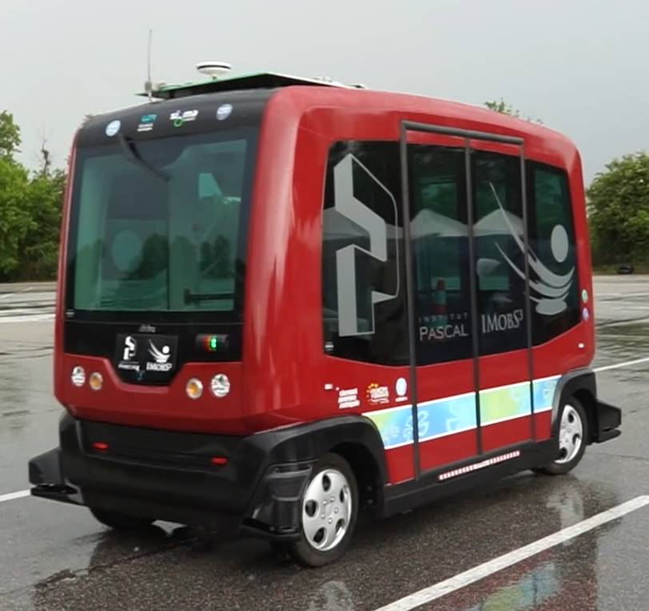
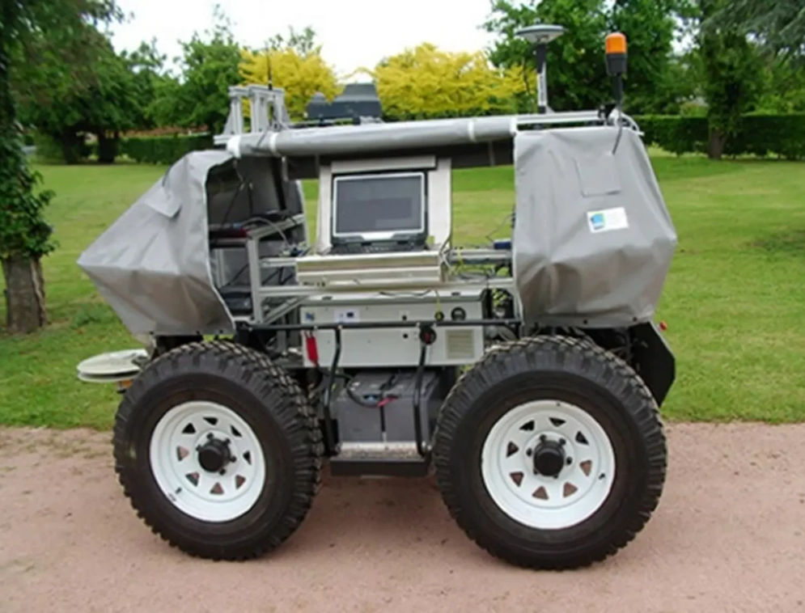
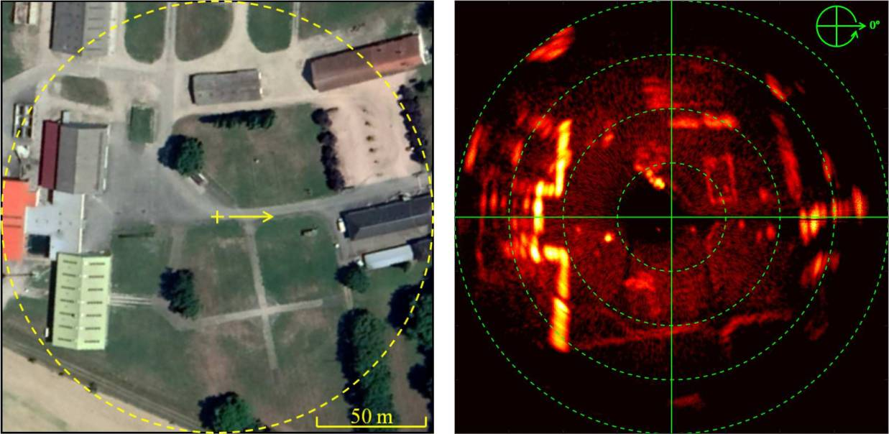

AVO, an autonomous robot which offers smart and ultra-ecological spraying
ARA, an ultra-high precision sprayer
I was in charge of specifying and implementing the positioning software module for these machines.
The challenge was to develop a sensor fusion algorithm with the following characteristics:
accepting heterogeneous sensor data (GPS and visual odometry measured from different locations on the machine)
accepting irregular sensor samplings (with different frequencies and potential arbitrary delays)
accepting missing or erroneous sensor data
running embedded on the machine, using the lowest CPU resource possible
providing real-time prediction estimation (predict the future trajectory of a plant detected in the past)
Not only did my work meet all these requirements but it did so in robust way: during my last year at Ecorobotix, no bugs were reported related to this positioning software module.
I’ve been working on project Tornado for PerSyst team at Institut Pascal.
Using the robotics framework developed in-house in C++ under ROS, my mission was to enhance the EZ10 autonomous shuttle to demonstrate innovative functionalities in an urban environment:
integration of software and hardware modules supplied by project partners:
communication between vehicles and infrastructure
intelligent interaction with other users (pedestrians, cyclists)
fleet management system for heterogeneous vehicles
development of a specific user interface
EZ10 autonomous shuttle
Baudet-Rob (2018-2019)
Aroco is an autonomous off-road robotics platform developed by TSCF research unit at IRSTEA (now INRAE).
My work was to complete a long-term research project to provide the robot with a way to locate itself in an external environment using a panoramic radar:
implementation in C++ under ROS of cutting-edge research algorithms (antispeckle filter, localization and tracking by radar images correlation)
usage and extension of the existing robotics framework developed by the team (multi-sensor data fusion, control law, configuration tools)
development of a real demonstrator based on the Aroco robot
At the end of my mission, the robot was able to successfully demonstrate:
real-time localization by radar (without GPS)
path recording and following with a repeatability better than 10 cm
using autonomous embedded software on the robot
Aroco autonomous robot (source)
Satellite view on the left / radar map on the right (images taken from the conference paper)